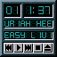

wmdocklets — Applets for Window Maker dock
Various toys for Window Maker's dock and a C library to create them. Get the source from
GitHub
.

wmplayer
A front end to
Rhythmbox
music player.
Lubomir Rintel
<lkundrak@v3.sk>